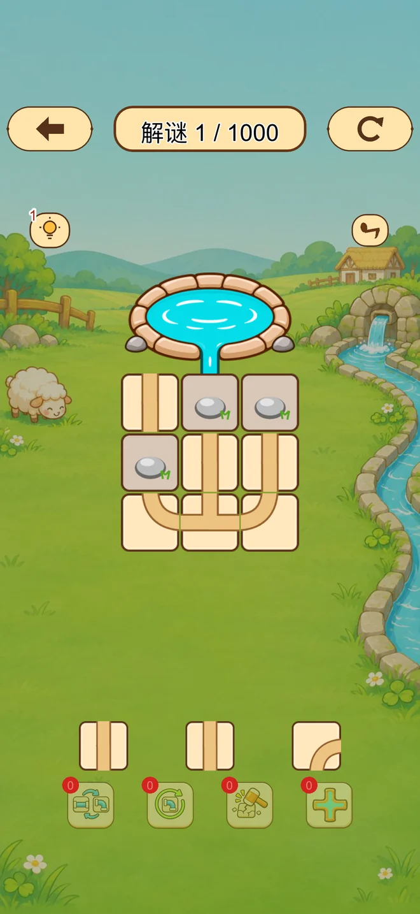

Sheep Waterways
Connect the pipes. Water the meadow.
Learn the pipes and tools in three tutorials, then tackle 1,000 puzzles. Take your time in Casual mode or play against the clock in Speed mode.
iPhone and iPad · Game interface in Simplified Chinese

Puzzle
Match pipe openings and connect every target tile to the water. Stuck? Use the in-game hint.
Casual
Grow the board at your own pace. Return to the start of your saved round whenever you like.
Speed
Work against the countdown and see how far you can get.